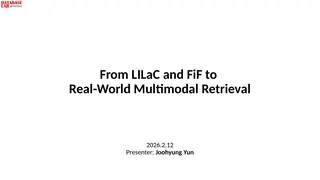

From LILaC and FiF to Real-World Multimodal Retrieval
What my two papers solved, what a practical web-scale multimodal retriever still needs (raw HTML, reactive pages, more modalities, grounding, budgets), how recent work approaches each gap, and four research directions.